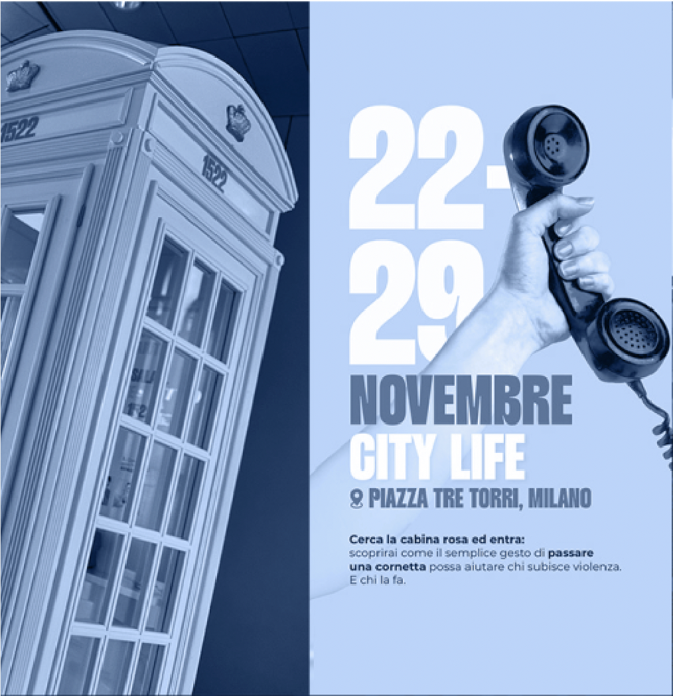
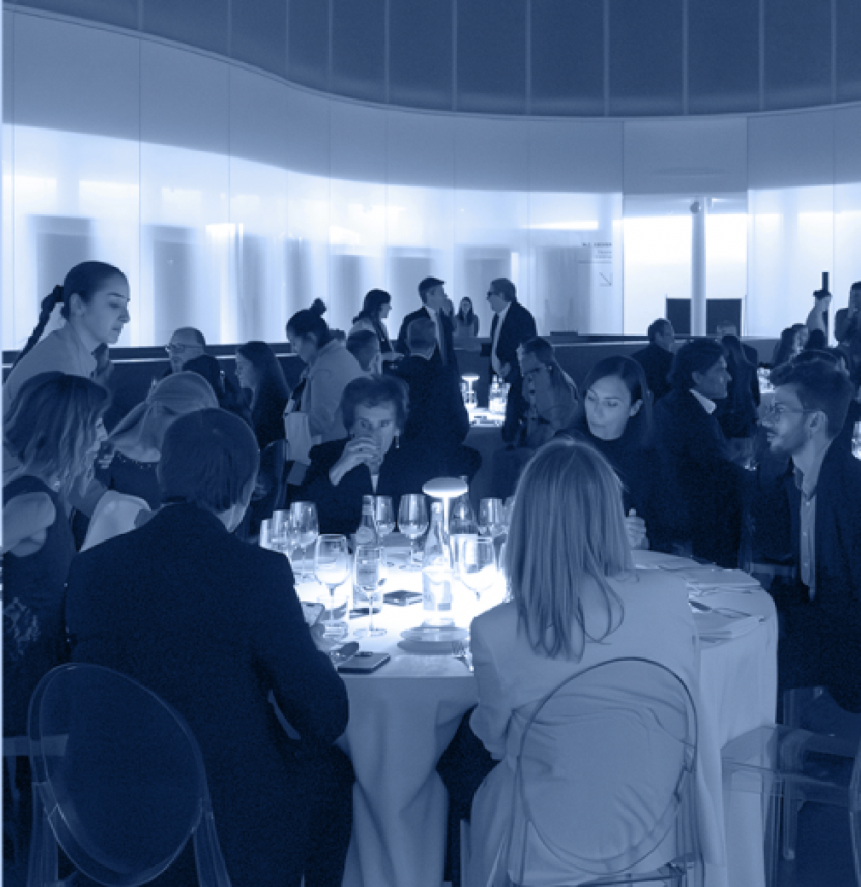

progetti legati al mondo sanitario, scientifico e sociale.
A-Tono
ETS
A-Tono ETS nasce per connettere bisogni sociali reali con soluzioni già attive e radicate nei territori, offrendo visione strategica, competenze professionali e supporto operativo alle realtà che generano cambiamento. Siamo il lato sociale e solidale del gruppo A-Tono: mettiamo persone, esperienze e know-how al servizio della comunità, rafforzando progetti esistenti attraverso reti, sinergie e sostenibilità.
SCOPRI CHI SIAMOLe realtà che abbiamo
aiutato in questi anni
Fino a oggi, abbiamo incontrato persone fantastiche con le quali abbiamo sviluppato bei progetti, ricchi di emozione e gioia nel farli.


Sostienici con una
DONAZIONE
Anche il tuo contributo può fare la differenza. Se desideri sostenere i nostri progetti e iniziative puoi effettuare una donazione tramite bonifico bancario.
IBAN: [INSERIRE IBAN]
Ogni donazione, grande o piccola, ci aiuta a sviluppare nuovi progetti di valore. Grazie per il tuo sostegno e per scegliere di essere parte del cambiamento.
Puoi sostenerci
anche nel tuo 5x1000
Donare è semplice: basta inserire il nostro Codice Fiscale 97737800157 nello spazio dedicato alle organizzazioni non profit nella tua dichiarazione dei redditi.
Un piccolo gesto può lasciare una grande impronta.